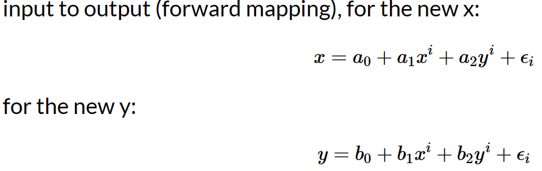
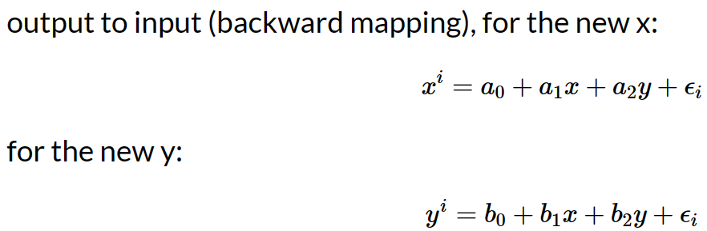
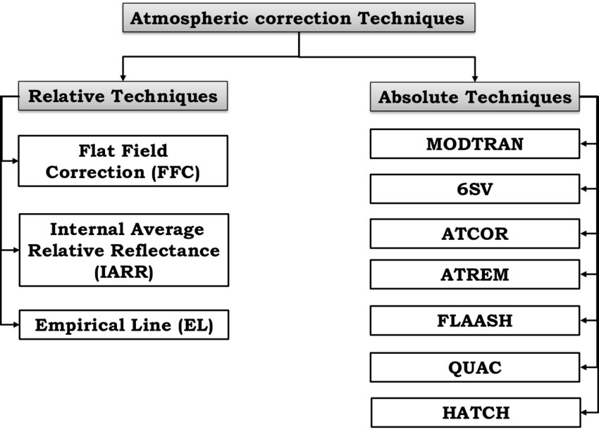
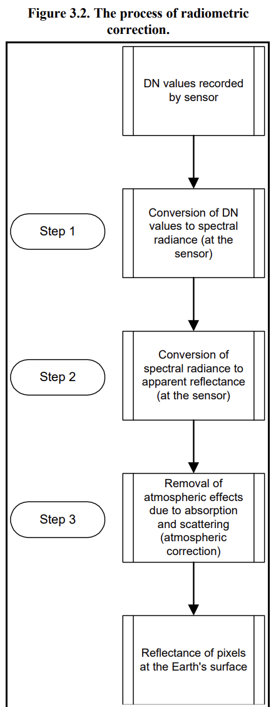

3 Chapter 3 - Remote sensing data and Corrections
3.1 Summary
3.1.1 Corrections
3.1.1.1 Geometric correction
- Image distortion due to sensor imaging method
- Effect of changes in orientation elements outside the sensor
- Image point displacement due to terrain undulation
- Image distortion due to earth curvature
- Image distortion due to atmospheric refraction
- Effects of the Earth’s rotation Source:Principles and application of remote sensing by Jiabing Sun
Identify Ground Control Points (GPS) to match known points in the image and a reference dataset
(1)local map
(2)another image
(3)GPS data from handheld deviceWe take the coordinates and model them to give geometric transformation coefficients
linear regression with our distorted x or y as the dependent or independent
plot these and try to minimise the RMSE (Jensen sets a RMSE value of 0.5)
There are many transformation algorithms available to model the actual coordinates

then..
- This means for every value in the output (gold standard) pixel we can get a value in the original input image. The images are distorted as so might not completely overlap
- RMSE
(1)(observed - predicted (the residual))^2
(2)sum them and divide by number of data points
- square root that total
Resample

Source:Abdul Basith
3.1.1.2 Atmospheric correction
Relative(to something)
Normalize intensities of different bands within a single image; Normalise intensities of bands from many dates to one dateAbsolute(definitive)
(1)Change digital brightness values into scaled surface reflectance, then compare thesescaled surface reflectance values across the planet
(2)atmospheric radiative transfer models
(3)However, nearly all assume atmospheric measurements are available which are used to “invert” the image radiance to scaled surface reflectance
(4)The scattering and absorption information comes from atmopshierc radiative transfer code such as MODTRAN 4+ and the Second Simulation of the Satellite Signal in the Solar Spectrum (6S)
Flowchart for various relative and absolute methods for atmospheric correction of satellite measured radiance. Source:researchgate
3.1.1.3 Orthorectification / Topographic correction
What is orthorectified imagery - Using elevation to enable accurate image georeferencing
Imagery has an amazing amount of information, but raw aerial or satellite imagery cannot be used in a GIS until it has been processed such that all pixels are in an accurate (x,y) position on the ground.The orthorectification process requires: An accurate description of the sensor, typically called the sensor model; detailed information about the sensor location and orientation for every image; and an accurate terrain model, such as the World Elevation service available from ArcGIS Online. After imagery has been orthorectified, it can be used within a GIS and accurately overlaid with other data layers.

3.1.1.4 Radiometric
Radiometric calibration, also known as radiometric correction, is important to successfully convert raw digital image data from satellite or aerial sensors to a common physical scale based on known reflectance measurements taken from objects on the ground’s surface. This type of correction is important for reliable quantitative measurements of the imagery.

The process of radiometric correction
3.2 Application
- Atmospheric Correction of Multispectral VNIR Remote Sensing Data: Algorithm and Inter-sensor Comparison of Aerosol and Surface Reflectance Products(Mishra et al., 2020)
This paper presents an algorithm for aerosol optical depth (AOD) retrieval and AC of VNIR imaging data. Cartosat-2S MX datasets acquired in different regions of the world were used, covering parts of the Indian subcontinent (India, Nepal, Pakistan and Bangladesh), China and the USA. A total of 106 Cartosat-2S datasets obtained in January, July, November and December of 2016 and 2017 were used. Each Cartosat-2S dataset contains radiometric calibration radiation for all four bands. AOD, surface reflectance and NDVI obtained by processing Cartosat-106S MX data at 2 globally distributed locations were compared with the corresponding MODIS-terra products juxtaposed in time and space to test the performance of their algorithm.Cartosat-2S and MODIS-terra derived AOD, surface reflectance and NDVI The comparison shows very good correlation. the relative difference between Cartosat-2S AOD and MODIS-terra AOD is within 25%. It is concluded that the algorithm effectively eliminates atmospheric effects (aerosol-induced haze) and thus increases the contrast of the surface features.
- Thermal infrared radiometric calibration of the entire Landsat 4, 5, and 7 archive (1982–2010)(Schott et al., 2012)
This paper describes the methods and procedures used to perform radiometric calibration of the earliest bulk thermal dataset in the archive (Landsat 4 data). In order to make proper use of the thermal data, we need to be able to convert the data to surface temperatures. A key step in this process is the complete and consistent calibration of the entire archive to absolute radiation so that it can be compensated in the atmosphere to the radiation left at the surface and then to the surface radiation temperature. The completion of this work and the updated calibration of the earlier (1985-1999) Landsat 5 data (also reported here) concludes a comprehensive calibration of the Landsat thermal data archive from 1982 to the present. Finally, while the results reported in this paper indicate that the Landsat archive is well calibrated with very small residual uncertainties, they also indicate the existence of small sources of uncertainty not accounted for by the error model. If these sources can be identified and are systematic rather than random, they may further reduce the errors (below 0.5 K). So it is still possible to continue to improve the error model.
3.3 Reflection
It was a very informative week in the classroom. The first part was calibration and I learnt that the points of the output diagram can be found from the original diagram after calibration, but not necessarily vice versa. There was also the need to resample after geometric corrections. Atmospheric corrections are divided into absolute and relative, and relative corrections require the selection of the base map and the constant elements. Another thing I learnt in class about atmospheric correction is that Atmospheric correction happens before topographic correction. Through this week I have gained a clearer understanding of the four correction methods and I have also gained an understanding of the second part of data joining and image enhancement, data joining can then be linked to the GIS course.
3.4 Reference
Mishra, M.K., Rathore, P.S., Misra, A., Kumar, R., 2020. Atmospheric Correction of Multispectral VNIR Remote Sensing Data: Algorithm and Inter‐sensor Comparison of Aerosol and Surface Reflectance Products. Earth Space Sci. 7. https://doi.org/10.1029/2019EA000710
Schott, J.R., Hook, S.J., Barsi, J.A., Markham, B.L., Miller, J., Padula, F.P., Raqueno, N.G., 2012. Thermal infrared radiometric calibration of the entire Landsat 4, 5, and 7 archive (1982–2010). Remote Sens. Environ. 122, 41–49. https://doi.org/10.1016/j.rse.2011.07.022